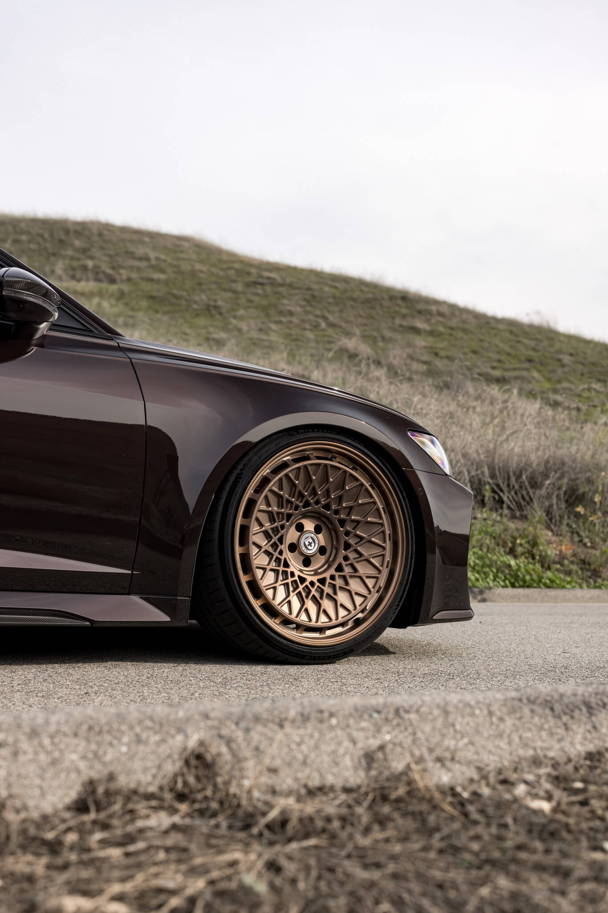

Selected Works

E-Commerce Redesign
UX Research, UI Design, Frontend Development

SaaS Dashboard AI
Fullstack Development, API Integration
Halo, saya Achmad Riky. Seorang Developer yang mendalami Backend, sekaligus Software Quality Assurance, saya tertarik dan berkomitmen untuk membangun sistem yang efisien dan dapat diandalkan dalam kehidupan sehari-hari.
UX Research, UI Design, Frontend Development
Fullstack Development, API Integration
Menurut saya software bukan hanya fungsionalitas, tapi soal kualitas dan reliabilitas. Sebagai seorang yang mendalami Backend Developmont, fokus utama saya adalah membangun sistem yang efisien dan dapat diandalkan.
Namun, pengalaman saya sebagai Software Quality Assurance memberikan sudut pandang dalam membangun software dengan "pola pikir penguji". Ini berarti setiap software yang saya bangun selalu mengedapankan kualitas fungsional, penanganan error, dan performa yang baik.
Singkatnya, saya membangun software di balik layar, dan saya memastikan software tersebut dapat diandalkan hingga masa depan.
Menjamin kualitas produk melalui pengujian otomatis dan manual untuk meminimalisir regresi.
Fokus pada arsitektur server yang handal, manajemen database, dan integrasi API yang efisien.
Mengelola siklus deployment dan standarisasi lingkungan kerja yang terisolasi.
Membangun interface dengan mengutamakan fungsional, kesederhanaan, dan user experience.
Kemampuan dan pengetahuan tambahan untuk mendukung proses development yang efisien.
Saya selalu terbuka untuk kolaborasi, proyek freelance, atau sekadar berdiskusi tentang teknologi dan desain.